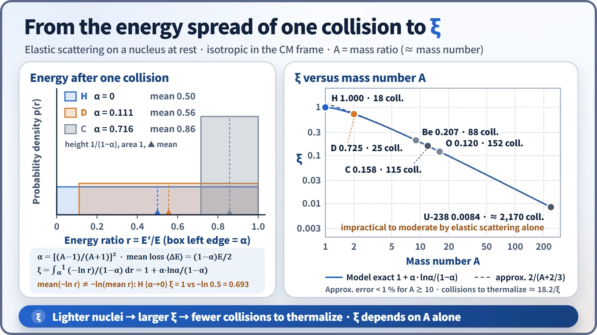
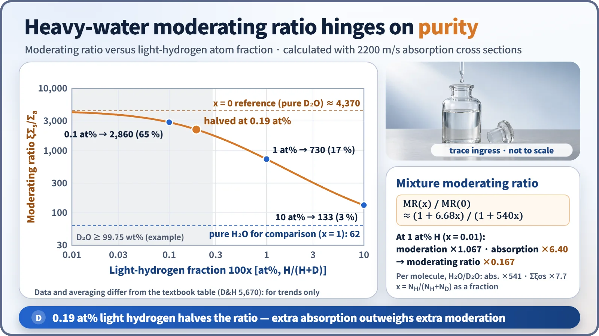
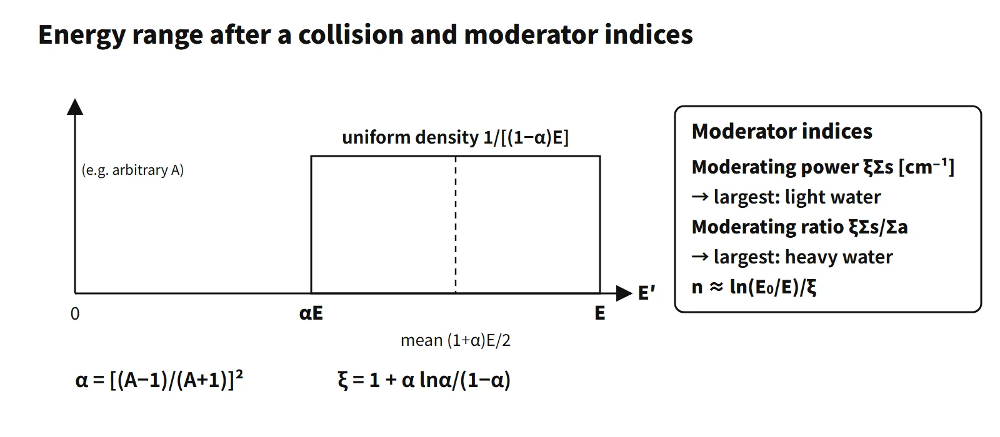

Reactor Physics & Kinetics · C-RX-019
Moderating Power and Moderating Ratio — From the Derivation of ξ to the Purity Sensitivity of Heavy Water, by Calculation
Light water slows neutrons fastest, heavy water wastes the fewest: the two moderator indices from first principles, with the heavy-water purity calculation.
Moderating power ξΣs [cm⁻¹] is the average gain in lethargy per unit distance a neutron travels: "how short a distance it takes to slow neutrons down". Moderating ratio ξΣs/Σa is the moderating power divided by the macroscopic absorption cross section, a dimensionless number expressing "how well the material moderates compared with what it loses to absorption"; it is the overall figure of merit of a moderator.
In short: "Moderating power ξΣs measures the speed of slowing down, moderating ratio ξΣs/Σa measures slowing-down efficiency relative to absorption; light water has the largest moderating power, heavy water the largest moderating ratio." This entry concentrates on the derivation and calculation of the two indices and on the purity sensitivity of heavy water.
Principle and mechanism
Step 1: energy distribution after one collision, and α
Assume elastic scattering on a nucleus of mass number A at rest, isotropic in the centre-of-mass frame. The energy after scattering, E′, is then uniformly distributed between αE and E.
- α = [(A−1)/(A+1)]²: the minimum energy ratio, reached in a head-on collision (E′min = αE)
- Mean energy after scattering ⟨E′⟩ = (1+α)E/2; mean loss ⟨ΔE⟩ = (1−α)E/2
Hydrogen has α = 0, so a neutron can lose all its energy in one collision and loses half on average. Carbon has α = 0.716, so even the maximum loss is 28 % and the average only 14 %.
Step 2: deriving ξ
ξ is the average decrease in the logarithm of energy per collision.
ξ = ⟨ln(E/E′)⟩ = ∫ ln(E/E′) · dE′/[(1−α)E] (from αE to E) = 1 + α·lnα/(1−α)
In the model of a free nucleus at rest with isotropic scattering, E drops out and ξ depends on A only. Lethargy therefore increases by the same average amount in every collision, and the number of collisions is estimated as n ≈ ln(E₀/E)/ξ. From 2 MeV to 0.025 eV, ln(8×10⁷) = 18.2, so n = 18.2/ξ. For large A, ξ ≈ 2/(A + 2/3) (error below 1 % for A ≥ 10; not used for hydrogen).

| Nucleus | α | ξ | Mean fractional loss (1−α)/2 | Collisions to thermalize 18.2/ξ |
|---|---|---|---|---|
| H | 0 | 1.000 | 0.500 | 18 |
| D | 0.111 | 0.725 | 0.444 | 25 |
| C | 0.716 | 0.158 | 0.142 | 115 |
| O | 0.779 | 0.120 | 0.111 | 152 |
| U-238 | 0.983 | 0.0084 | 0.0083 | about 2,170 |
"Mean fractional loss" and ξ are different quantities. For hydrogen the fractional loss is 0.5 while ξ is 1: the logarithmic average gives more weight to collisions with large losses.
Step 3: ξ of a compound and the moderating power
For a molecular moderator, ξ is the average of the elemental ξ values weighted by scattering cross section.
ξ̄ = Σ ξiΣs,i / Σ Σs,i
For H₂O, with two σs(H) = 20.4 b and σs(O) = 3.76 b: (40.8×1 + 3.76×0.120)/44.56 = 0.926 (textbook table 0.920). Taking a simple average of the elemental values, (1+1+0.12)/3 = 0.71, is wrong. For D₂O: (6.78×0.725 + 3.76×0.120)/10.54 = 0.509.
The moderating power multiplies this by Σs. With molecular number densities of 3.34×10²² (H₂O) and 3.32×10²² cm⁻³ (D₂O), ξΣs comes out at 1.38 and 0.178 cm⁻¹ respectively, consistent with the textbook values of 1.35 and 0.176.
Step 4: why the moderating ratio means "absorption versus moderation"
In a 1/E slowing-down spectrum the slowing-down density is q = ξΣs·φ(E)·E, and the absorption rate per unit lethargy is Σa·φ(E)·E. Their ratio is
(absorption per unit lethargy) / (slowing down through unit lethargy) = Σa / ξΣs = 1 / moderating ratio
A moderating ratio of 5,670 means one absorption for every 5,670 neutrons slowing down through one unit of lethargy. The resonance escape probability uses the same denominator: in the homogeneous NR approximation p = exp[−NF·Ieff/(ξΣs)], so the larger the moderating power, the larger p.
Step 5: the scorecard (values from one textbook table)
| Moderator | ξ | Moderating power ξΣs [cm⁻¹] | Moderating ratio ξΣs/Σa | 18.2/ξ |
|---|---|---|---|---|
| H₂O | 0.920 | 1.35 | 71 | about 20 |
| D₂O | 0.509 | 0.176 | 5,670 | about 36 |
| Be | 0.209 | 0.158 | 143 | about 87 |
| Graphite | 0.158 | 0.060 | 192 | about 115 |
Calculated directly from 2200 m/s absorption cross sections (H 0.332 b, D 0.000519 b, O 0.00019 b), the moderating ratio is 62 for light water and about 4,400 for pure heavy water. The difference appears to come from different cross-section data sets and averaging methods (2200 m/s values versus Maxwellian averages, etc.), so compare values only within one table.
What it means in a plant
Why heavy water has the best moderating ratio yet needs a large core
The ratio of moderating powers is 0.176/1.35 = 0.13: to gain the same lethargy, a neutron must travel about 7.7 times farther than in light water. This is because σs of D (3.4 b) is one sixth that of H (20.4 b) and ξ is also smaller, at 0.725. The Fermi age τ = ∫D/(ξΣs)du grows too, so the slowing-down length √τ is 5.2 cm in light water and 11.4 cm in heavy water. Representative moderator-to-fuel volume ratios are 1.95 for a PWR and 17 for a PHWR, with power densities of 102 versus 7.7 MW/m³ (Lewis, Table 4.1). That is why a CANDU has a large calandria and a large heavy-water inventory. In return, absorption is very small, so natural uranium can be used. A light-water reactor is the opposite: its large moderating power allows a tight lattice, but its high absorption requires enrichment, and it is designed on the under-moderated side.
When light water gets into heavy water: purity sensitivity

With the light-hydrogen fraction x = NH/(NH + ND) (oxygen excluded; with D purity in at%, x = 100 − purity), the moderating ratio of the mixture is
MR(x)/MR(0) ≈ (1 + 6.68x)/(1 + 540x)
Per water molecule, the absorption contribution of H₂O is about 540 times that of D₂O, and its moderating contribution (Σξσs) about 7.7 times. At x = 1 at%, the moderating contribution rises slightly, by a factor of 1.067, but the absorption contribution becomes 6.4 times larger, so the moderating ratio drops to 0.167 of its pure value. Calculated values on a 2200 m/s basis are about 4,370 pure → 2,860 at 0.1 at% → 1,890 at 0.25 at% → 730 at 1 at% → 133 at 10 at%. The moderating ratio halves at about 0.19 at% H. A light-water content of 0.25 wt% corresponds to a mole fraction of 0.278 %.
CANDU moderator is therefore kept at reactor-grade purity (roughly 99.75 wt% D₂O or higher). In one lattice calculation, reactivity fell by about 35 mk (fresh fuel) per 1 at% drop in D purity. Loss of purity is negative reactivity, so it is conservative from a control standpoint, but it directly erodes fuel economy. In operation, isotopic purity is analysed periodically and managed with upgrading (re-enrichment) facilities and leak monitoring (heat exchangers, etc.).
Regulatory and design criteria
- For example, US 10 CFR 50 Appendix A, GDC 11, 26 and 28: require inherent reactivity feedback and reactivity control. The choice of moderator and the design of the moderator-to-fuel ratio (under-moderation) follow from these requirements.
- Nuclear Suppliers Group Guidelines, INFCIRC/254 Part 1: deuterium and heavy water with a D/H atomic ratio exceeding 1:5,000 are controlled as trigger-list non-nuclear materials for reactors, because heavy water with its high moderating ratio makes natural-uranium reactors possible.
Easily confused pairs
| Moderating power ξΣs | Moderating ratio ξΣs/Σa | |
|---|---|---|
| Dimension | cm⁻¹ | Dimensionless |
| What it asks | Slowing down per distance travelled | Slowing down relative to absorption |
| Top performer | Light water 1.35 | Heavy water 5,670 |
| Design consequence | Slowing-down length, core size | Fuel enrichment, neutron economy |
| ξ (logarithmic mean) | Mean fractional loss (1−α)/2 | |
|---|---|---|
| H | 1.000 | 0.500 |
| C | 0.158 | 0.142 |
| Use | Number of collisions n = ln(E₀/E)/ξ | Mean energy lost in one collision |
Key points at a glance
- α = [(A−1)/(A+1)]²; E′ after scattering is uniform between αE and E → mean loss (1−α)E/2.
- ξ = ⟨ln(E/E′)⟩ = 1 + α lnα/(1−α) ≈ 2/(A+2/3); H = 1, D 0.725, C 0.158.
- Collisions n = ln(E₀/E)/ξ = 18.2/ξ (2 MeV → 0.025 eV): H₂O about 20, D₂O about 36, graphite about 115.
- Moderating power ξΣs [cm⁻¹]: lethargy gain per unit distance → light water 1.35 > heavy water 0.176 > graphite 0.060.
- Moderating ratio ξΣs/Σa: Σa/ξΣs = absorption per lethargy / slowing down → heavy water 5,670 > graphite 192 > light water 71.
- ξ of a compound: scattering-cross-section-weighted average (H₂O 0.92).
- Light water: largest moderating power → compact core; high absorption → enrichment needed.
- Heavy water: largest moderating ratio → natural uranium possible; small moderating power → large core and heavy-water inventory.
- Purity: 0.19 at% light hydrogen halves the moderating ratio → reactor-grade purity control.
- Which index? "Best moderator" is ambiguous: light water leads on moderating power, heavy water on moderating ratio. Quote moderating-ratio numbers from a single table, since heavy-water values in the literature range from 5,670 to 21,000 depending on purity and the Σa basis.
